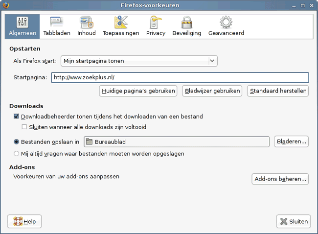

Zoek+ instellen als startpagina is eenvoudig. Zoek eerst het menu de 'Voorkeuren' of 'Opties' op.
Type vervolgens in het tekstvakje 'http://www.zoekplus.nl' (zonder aanhalingstekens) en sluit het venster.
Screenshot Firefox: 